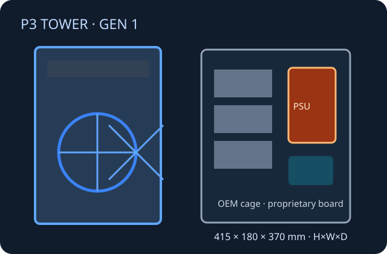

[ TOWER WORKSTATION // ORIGINAL P3 TOWER GENERATION ]
Lenovo ThinkStation P3 Tower
First-generation P3 Tower. Do not conflate its system board, power options or clearances with the separately cataloged Gen 2.

Specifications & fit
| Model / revision | ThinkStation P3 Tower, first-generation platform (2023); verify the machine type and production label. |
|---|---|
| Board form factor | Lenovo proprietary board and chassis mounting; standard ATX or microATX fit is not documented. |
| Dimensions | 415 × 180 × 370 mm (H × W × D). |
| PSU | Model options include OEM 500 W, 750 W and 1100 W supplies; confirm exact option and harness by machine type. |
| GPU / cooler / radiator fit | Lenovo-supported graphics options include single high-performance and compact/multi-card configurations subject to PSU and slots. No published universal retail GPU length or radiator size; retain specified CPU heatsink/duct. |
| Drive bays | Up to four 3.5-inch SATA drives in supported cage configurations; M.2 positions and access depend on the installed cage/drive combination. |
| Airflow | Factory fan and thermal modules feed the board and CPU/GPU zones; preserve ducts, covers and clear intake/exhaust paths. No standard AIO radiator allowance is specified. |
| Serviceability / compatibility | Use the Lenovo hardware maintenance manual and machine-type parts list. Board, PSU, fan assemblies, cage and front I/O are OEM-specific; not an ATX case conversion target. |
Manufacturer sources
- Lenovo PSREF — ThinkStation P3 TowerPlatform specifications and machine configuration references.
- Lenovo — ThinkStation P3 Tower datasheetDimensions, PSU variants, expansion, storage and graphics configurations.